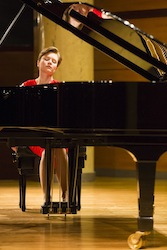
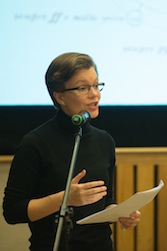
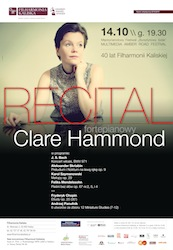
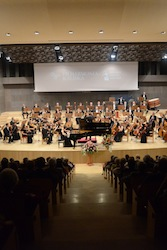

In March 2014 Clare was awarded a grant from the British Council's Artists' International Development Fund to pursue an exploration of Polish piano music in the latter part of the year. Over the course of several visits to Poland, Clare researched the piano music of a number of Polish composers, performed at venues across the country, and started to forge connections with Polish composers and promoters.
Clare was heavily involved in centenary celebrations for Anglo-Polish composer Andrzej Panufnik in 2014. She released a recording of his complete piano works with BIS Records in June 2014 and co-curated the chamber festival Panufnik 100: a family celebration at Kings Place in London in November. Her performances in Poland were all linked to the centenary.
Andrzej Panufnik - Twelve Miniature Studies, Nos. 1-6
Andrzej and Roxanna Panufnik - Modlitwa
Szymanowski - Métopes
Andrzej Panufnik - Hommage à Chopin, ms. 1 and 4
Ravel - Le Tombeau de Couperin
Supported by the British Council's Artists' International Development Fund.
7pm, Orski Gallery, W. Broniewskiego 4, 34-500 Zakopane, POLAND
Download the festival poster here.
Bach - Italian Concerto, BWV 971
Sibelius - The Trees, Op. 75
Scriabin - Prelude and Nocturne for the left hand, Op. 9
Lipatti - Sonatine for the left hand
Chopin - Études Op. 25 (complete)
Panufnik - Twelve Miniature Studies, Nos. 7-12
5pm, Warsaw Philharmonic Chamber Hall, Jasna 5, 00-950 Warszawa, POLAND
Download the concert programme here.
Clare gave a lecture on Panufnik's piano music, and
performed his complete piano works, comprising:
Twelve Miniature Studies
Reflections
Pentasonata
Supported by the British Council's Artists' International Development Fund.
Part of the Warsaw Autumn International Festival of Contemporary Music.
Lecture 3.30pm, Recital 5pm, Friday 26 September at Polish Audytorium im. Karola Szymanowskiego,
Uniwersytet Muzyczny Fryderyka Chopina, 2 Okólnik St, Warsaw, POLAND
Download a transcript of Clare's lecture here.
Clare performed Panufnik's Piano Concerto with the Kalisz Philharmonic under Adam Klocek.
Supported by the British Council's Artists' International Development Fund.
7.30pm, Sala Koncertowa Filharmonii Kaliskiej, Ul. Nowy Świat 28-30, 62-800 Kalisz, POLAND
Download concert poster here and the concert programme here.
Bach - Italian Concerto BWV 971
Scriabin - Prelude and Nocturne for the left hand, Op. 9
Szymanowski - Métopes, Op. 29
Mendelssohn - Songs Without Words, Op. 67 Nos. 2, 4 and 5
Chopin - Études, Op. 25 (complete)
Panufnik - Twelve Miniature Studies, Nos. 7-12
Supported by the British Council's Artists' International Development Fund.
7.30pm, Sala Koncertowa Filharmonii Kaliskiej, Ul. Nowy Świat 28-30, 62-800 Kalisz, POLAND
Download concert poster here and the concert programme here.
Clare performed Panufnik's Piano Concerto with the Lublin Philharmonic under Sławek Wróblewski.
Supported by the British Council's Artists' International Development Fund.
7pm, Filharmonia im. H. Wieniawskiego w Lublinie, 20-030 Lublin, POLAND
Download the concert programme here.
|  |  |  |  |
Click here to view more photos from the tour.
Twelve Miniature Studies, Nos. 11 and 6 by Andrzej Panufnik
Hommage à Chopin, m. 4 by Andrzej Panufnik
Glo by Roxanna Panufnik
Twelve Miniature Studies, Nos. 7-12 by Sir Andrzej Panufnik and Études Op. 33 Nos. 1-8 by Karol Szymanowski, recorded live at the Wigmore Hall in 2011.